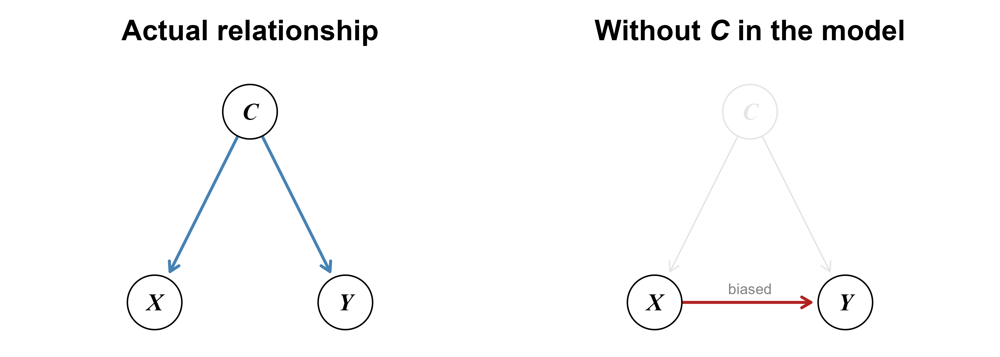
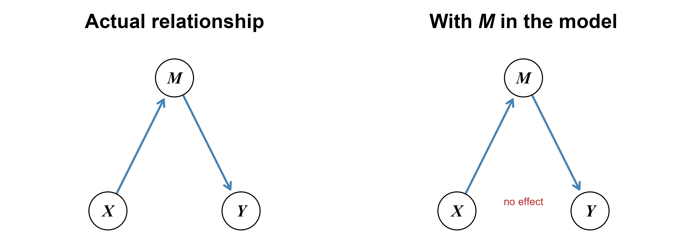
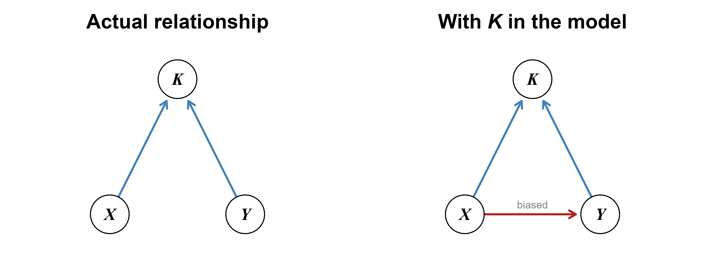
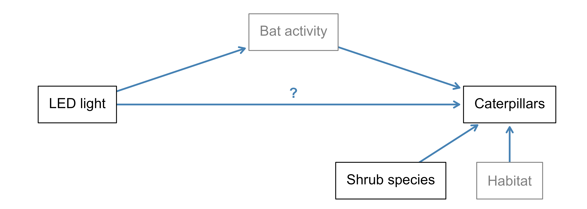
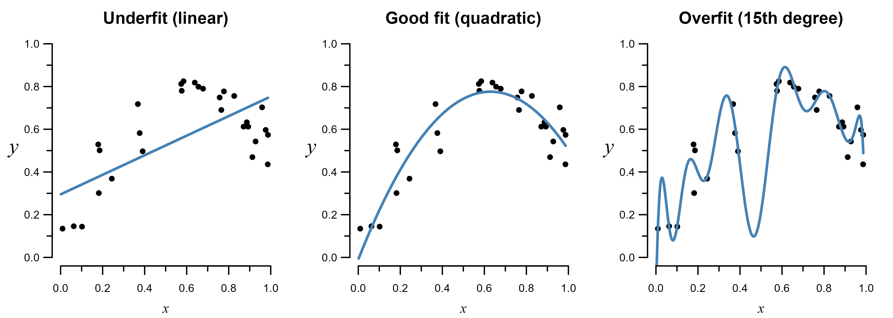
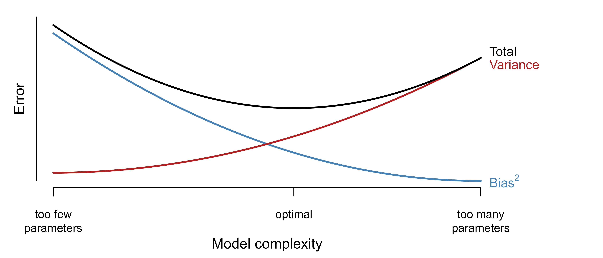

6 Model Selection
How to choose the right model for the research question.
So far, we used regression models to estimate the direction, size and significance of effects. This is called inference, and it is one of three ways in which a model can be used [1], [2]. Valid inference requires the model to be chosen before seeing the outcome. Yet, many textbooks, papers and even statistics courses teach choosing the ‘better’ looking model with measures like AIC. How problematic that is depends on the type of research question.
6.1 Type of Research Question
Research questions in empirical1 sciences can be divided into three types:
1 Empirical sciences collect evidence primarily through observations. A counterexample is mathematics, where proofs are derived based on axiomatic truths.
Estimating the size and direction of an effect; testing pre-specified hypotheses.
Example questions:
- Does a compound affect blood pressure?
- Which diet is most effective, and by how much?
- Does a medicine work differently in men and women? (example of an interaction)
Model selection:
To the extent possible, the primary outcome, model and any hypotheses should be chosen in advance, based on expert knowledge. Some fields even require preregistration.
- ✓ Choosing a flexible model from the start (e.g., negative binomial instead of Poisson; a spline instead of a linear effect), or making it more flexible when diagnostics reveal a problem you did not foresee, such as a curved relationship.
- ✓ Reducing dimensions without using the outcome, for example with PCA on the explanatory variables.
- ✓ Comparing models when the choice of model is the answer to a planned question.
(e.g., a model with and without interaction, or competing hypotheses compared by AIC [3]) - ✗ Using a simpler or less robust analysis because a check found nothing (e.g., a Poisson model after a non-significant test for overdispersion) [4], [5].
- ✗ Adding or dropping terms by their \(p\)-values, adjusted \(R^2\), AIC, BIC or another measure of fit (see Section 6.4).
Reporting:
Mention every choice made in analysis, and show whether another reasonable choice would change the conclusion. A convention used in some fields is reporting two models: One with only the variables of interest and one that adds all suspected confounders [6].
Making sense of large datasets; finding patterns for follow-up studies; generating new hypotheses.
Example questions:
- How are 20 biomarkers for sepsis related to each other?
- What adaptations to drought are typical of plants growing in dunes?
- Do some bird species respond more strongly to urban noise than others? (After concluding that birds respond significantly to urban noise)
Model selection:
Any method is acceptable, including choosing variables based on the measures for comparing models later in this chapter. However, some methods are less stable than others. With stepwise selection, which adds or removes one variable at a time, a slightly different sample often leads to a different set of variables, especially when the variables are correlated [7]. Treat selected variables as a ‘plausible set’ at best.
Reporting:
Report everything you tried, and clearly indicate—including in the abstract—that the study is exploratory in nature. The same data cannot be used to generate and test the same hypothesis (i.e., moving the goalpost after kicking the ball).
- ✓ Presenting the findings as hypotheses for a follow-up study.
- ✗ Disguising an exploratory study as confirmational.
(e.g., “We found a significant effect of A and B, but not of C.”)
Predicting the outcome of new observations.
Example questions:
- Which patients should receive treatment?
- What is a patient’s risk of a heart attack in the next ten years?
- Which coral reefs will bleach during the next marine heatwave?
Model selection:
Predictive modeling uses a holdout set, or cross-validation, to report performance on unseen observations. Model selection is fine for predictive modeling, as long as you include any model selection in the training procedure. Additionally, model selection can itself overfit, because the more models you compare, the more likely the best one partly fits noise in the data used to choose it [8].
- ✓ Including any variable that improves the predictions, as estimated by cross-validation or approximated by AIC [9].
- ✗ Using all data (before splitting) to scale or select variables, or any other form of data leakage.
- ✗ Using the same held-out data to choose the model and report its predictive performance.
(That requires a separate test set, or nested cross-validation.)
Reporting:
Report how well the chosen model predicts data that were not used to fit or choose it, using a separate test set or cross-validation. Performance on data used to fit or choose the model will be optimistically biased.
Predictive modeling works quite differently from what this book covers. A great resource is An Introduction to Statistical Learning, free to download in an R and a Python edition. Ch. 5 covers cross-validation and Ch. 6 model selection.
A study can have several goals. For example, in clinical science, it is not uncommon to have a primary outcome with a planned, preregistered analysis, and subgroup analyses with looser rules, because these are considered exploratory. The most important takeaways:
- Be transparent: Report every choice in the analysis, including what you tried and did not keep.
- Decide the goal before the analysis. It determines which choices are allowed, and a model that is ‘best’ for one goal can be inferior, or even wrong, for another [1].
- Data used to choose a model cannot also be used to test it, whether by its \(p\)-values or by its predictive performance.
6.2 Choosing the model in advance
Applies to: Inference
Standard \(p\)-values and confidence intervals assume that the analysis was fixed before seeing the data [10]. Choices that do not use the outcome are generally safe, as they cannot bias the analysis toward significance. A choice that does use the outcome, such as a change after the diagnostics, should not depend on the estimate of interest [10], [11], and should err on the side of caution. This section explains how to make such choices, and Section 6.4 what happens otherwise.
Which variables to include
Whether a variable belongs in the model depends on how it is related to the explanatory variable of interest (\(\boldsymbol{X}\)) and to the outcome (\(\boldsymbol{Y}\)). A directed acyclic graph (DAG) shows this as a diagram with an arrow from each cause to its effect. (Acyclic means the graph never forms a loop.)
A confounder affects both the outcome and the variable of interest.
A confounder \(\boldsymbol{C}\) affects both \(\boldsymbol{X}\) and \(\boldsymbol{Y}\), so the two vary together, even if \(\boldsymbol{X}\) has no effect on \(\boldsymbol{Y}\). A model without \(\boldsymbol{C}\) attributes this to \(\boldsymbol{X}\), so its estimate is biased. Hence, include any confounders in the model.
In interventional studies, randomized treatment allocation averages out confounding effects, but including them can still increase power by explaining part of the spread in the outcome.
CautionExample
Coffee consumption is often linked to lung cancer, but this link is caused by the confounding variable smoking. On average, smokers drink more coffee and are much more likely to develop lung cancer. Large overarching meta-analyses adjusting for smoking typically show that coffee consumption is not a risk factor for lung cancer [12]–[14].
For additional examples of confounding, see: stats.stackexchange.com/q/432866
A mediator is a variable through which the variable of interest affects the outcome.

With a mediator \(\boldsymbol{M}\) in the model, the coefficient of \(\boldsymbol{X}\) measures only the part of its effect that does not run through \(\boldsymbol{M}\) (the direct effect). If the whole effect runs through \(\boldsymbol{M}\), the model finds no effect at all. Hence, leave mediators out of the model. If the purpose of a study is to determine whether an effect is direct or mediated, look up mediation analysis.
In interventional studies, include only variables measured before the treatment started, because the treatment cannot have affected them.
CautionExample
Suppose you want to estimate how much fossil fuel consumption contributes to global warming. CO2 levels are related to global temperature, so it is tempting to include them in the model. However, fossil fuel consumption does not raise the temperature directly. It raises CO2 levels, which in turn raise the temperature.
\[\text{fossil fuel consumption} \to \mathrm{CO}_2 \to \text{average global temperature}\]
In this example, CO2 is a mediator. Including a mediator removes the indirect effect of the variable of interest [15]. With CO2 in the model, the coefficient of fossil fuel consumption is close to zero. That is not wrong, because there is no direct effect, but it also does not answer the question.
A collider is affected by both the variable of interest and the outcome.

Because \(\boldsymbol{X}\) and \(\boldsymbol{Y}\) both affect a collider \(\boldsymbol{K}\), observations with the same value of \(\boldsymbol{K}\) that differ in \(\boldsymbol{X}\) tend to differ in \(\boldsymbol{Y}\) as well. With \(\boldsymbol{K}\) in the model, the coefficient of \(\boldsymbol{X}\) describes how \(\boldsymbol{Y}\) differs with \(\boldsymbol{X}\) at the same value of \(\boldsymbol{K}\), so \(\boldsymbol{X}\) and \(\boldsymbol{Y}\) appear related, even if \(\boldsymbol{X}\) has no effect on \(\boldsymbol{Y}\). Hence, leave colliders out of the model.
In interventional studies, include only variables measured before the treatment started, because neither the treatment nor the outcome can have affected them.
CautionExample
Suppose a new antibiotic does not affect how quickly patients with pneumonia recover, but patients who receive it are kept in the hospital one extra day for monitoring. Patients who recover sooner also leave sooner. Among patients who stayed equally long, those on the new antibiotic must then have recovered a day sooner. With length of stay in the model, the antibiotic would seem to shorten recovery, even though it has no effect at all [16].
For your own study, draw a DAG before you collect data: every variable you plan to measure, with an arrow for each effect you expect (see Figure 6.4 for an example). It shows which variables are confounders, mediators or colliders, and it makes your assumptions visible to your readers.
Planned comparisons
Whether to include an interaction does not depend solely on the research question. If subject knowledge suggests that a medicine works differently in men and women, by a clinically relevant amount, then a model without interaction is wrong. Leave it out only if there is no reason to expect it, and do not remove it merely because it is non-significant.
Comparing models is part of the method only if the comparison itself is the planned question, such as whether the effect of the medicine differs between men and women, or which of several competing hypotheses, each written down beforehand as a model, fits best [3]. The comparison then answers that question (see measures for comparing models).
Changing the model after fitting
After fitting, the model may still be changed in two ways:
A model chosen in advance can still be wrong in ways the design did not foresee. If the diagnostics reveal a problem, make the model more flexible, for example with an extra term or a transformation for a curved relationship. Report such a change clearly, together with the result of the model as planned. A check that finds nothing, however, is not a valid reason to switch to a simpler model [17] (see Section 6.4).
A non-significant term can still be biologically relevant. Remove a term only if it is negligible, that is, if its 95% confidence interval lies entirely within effects that are not biologically relevant [18]. Which effects are biologically relevant is a subject-matter judgment, made before seeing the data. Confounders should not be removed even then, because a confounder that is strongly related to the variable of interest can bias its estimate, however small its own effect. In a small study, the interval is rarely that narrow. If the interval exceeds the threshold for relevance, do not remove the term from the model. You can conclude that the study could not determine its practical relevance [19].
TipWhat if a suspected interaction turns out to be negligible?
Decide in advance how large an interaction would have to be to matter in practice (\(\delta\)). For example, a difference of less than 5 mmHg in the effect of a medicine between men and women, or a change of less than 1 mmHg in its effect per ten years of age, may not be clinically relevant. If the 95% confidence interval of the interaction lies entirely between \(-\delta\) and \(\delta\), report that the interaction is negligible, and refit the model without it to estimate main effects. If the interval extends beyond \(\delta\), report that the study could not determine whether the interaction matters (but do not remove it from the model).
CautionExample
A study tests whether street lights affect the number of caterpillars in roadside vegetation. Of 40 roadside sites, 20 are chosen at random to get LED street lights, and the other 20 stay dark. Later that season, the caterpillars at each site are counted. Before the lights are installed, two other characteristics of each site are recorded. One is the number of shrub species, since caterpillars feed on shrubs. The other is whether the site borders forest or grassland.
The goal is inferential: Does LED light change the number of caterpillars, and by how much? So we choose the model before the caterpillars are counted. Counts like these are nearly always overdispersed, so we choose a negative binomial GLM instead of a Poisson model. The number of shrub species probably affects the number of caterpillars, so including it makes the estimate of light more precise. Since the shrub species were recorded before the lights were installed, light cannot have affected them. The number of shrub species is therefore neither a mediator nor a collider, and including it does not bias the estimate of light. Habitat could be included for the same reason. Either choice is valid, as long as it is made before seeing the counts. For our example, let’s say we leave habitat out.
We also leave out bat activity during the experiment. Bats hunt the moths that gather around street lights, so light may reduce the number of caterpillars through bat activity, which makes bat activity a possible mediator. Finally, we have no reason to expect light to affect caterpillars differently next to forest than next to grassland, so the model has no interaction.

After fitting, we check the model’s diagnostics. Had they revealed a problem (e.g., a curved relationship with the number of shrub species), we would make the model more flexible, and also report the model as planned. Suppose for now that they reveal none. The model then stays as planned. We keep the number of shrub species, whether or not it is significant, and we do not add habitat. The methods and results could read:
The number of caterpillars was analyzed with a negative binomial GLM with light and the number of shrub species, as planned before the data were collected. LED light did not significantly change the number of caterpillars (1.10 times as many as in the dark, 95% CI 0.72 to 1.68, \(p = 0.664\)).
Had we added habitat only after seeing the counts (e.g., because light then became significant), that \(p\)-value would not have been valid (see Section 6.4).
6.3 Measures for comparing models
Applies to: Inference Exploration Prediction
For inference, use these measures only to answer a planned comparison.
The measures below weigh how well a model fits, measured by \(-2 \log \mathcal{L}\), against how many parameters it has. \(\mathcal{L}\) is the likelihood: the probability of the observed data under the fitted model. The better a model fits, the lower \(-2 \log \mathcal{L}\).
If one model contains all terms of the other, they can be compared with a likelihood ratio test, a general form of the omnibus test. It tests whether the extra parameters of the larger model are all zero.
Mathematical formula:
\[\begin{align} \text{LR} &= -2 \log \mathcal{L}_0 - (-2 \log \mathcal{L}_1) \end{align}\]
where \(\mathcal{L}_0\) is the likelihood of the smaller model (m0 in the code) and \(\mathcal{L}_1\) that of the larger (m1). The \(p\)-value comes from a \(\chi^2\)-distribution with as many degrees of freedom as the larger model has extra parameters. With one extra parameter, \(p < 0.05\) if \(-2 \log \mathcal{L}\) decreases by more than \(3.84\).
Code:
anova(m0, m1)anova() performs the likelihood ratio test; for an ordinary linear model, it performs the \(F\)-test, its exact counterpart for the normal distribution.
from scipy import stats
LR = 2 * (m1.llf - m0.llf)
df = m1.df_model - m0.df_model
stats.chi2.sf(LR, df)Two common measures for model selection are AIC (Akaike information criterion) and BIC (Bayesian information criterion). Lower values are better.
Mathematical formula:
\[\begin{align} \text{AIC} &= -2 \log \mathcal{L} + 2k \\ \text{BIC} &= -2 \log \mathcal{L} + k \log n \end{align}\]
where \(k\) is the number of estimated parameters (the coefficients, plus, for example, the dispersion parameter of a negative binomial model), \(n\) the number of observations, and \(\log\) the natural logarithm.
AIC prefers the larger of two models if \(-2 \log \mathcal{L}\) decreases by more than \(2\) per extra parameter, BIC if it decreases by more than \(\log n\). From 8 observations on, BIC is therefore stricter. AIC approximates how well a model predicts new observations, as estimated by leave-one-out cross-validation [9]. BIC is preferred when the goal is parsimony (finding as simple a model as possible that explains well).
Code:
AIC(m0, m1)
BIC(m0, m1)print(m0.aic, m1.aic)
print(m0.bic, m1.bic)m0 and m1 stand for any two models of the same outcome, fitted to the same observations. Unlike the likelihood ratio test, AIC and BIC do not require one model to contain the other.
6.4 What data-driven selection does to \(p\)-values and estimates
Applies to: Inference Exploration
If the analysis is based on the data,2 the false positive rate is no longer guaranteed to be \(\alpha\) [20]. The effect can be large: A simulation study found that deciding whether and how to include just one explanatory variable, and reporting whichever choice gave a significant result, raised the false positive rate from 5% to 12% [21]. Confidence intervals become too narrow, and the effects that are selected are estimated too far from zero, because an effect is more likely to be selected when the sample exaggerates it [7], [22]. Common ways of choosing the model by the data:
2 As opposed to chosen based on the research question, primary outcome and study design.
Stepwise selection, removing terms that are not significant, is the most common example [7], [22]. Removing a confounder because it is not significant also biases the estimate of the effect you are interested in [23]. Likewise, removing an interaction because it is not significant biases the estimates, even if there is no interaction at all [24].
Statistical measures like AIC do not avoid this problem. For a term with one parameter, selection based on lower AIC is identical to selecting \(p\)-values below \(0.157\). R’s step() function, which adds and removes terms by AIC, therefore performs stepwise selection with \(\alpha \approx 0.157\). BIC and adjusted \(R^2\) are likewise thresholds for the \(p\)-value, each with a different \(\alpha\) [7], [25].
For exploratory research, these biases are acceptable, as long as the report clearly states the type of research question. Present the results as hypotheses for further research. Claiming you have found something significant after selecting the model on the same data is analogous to shooting a ball and moving the goalpost to wherever it lands.
ImportantCommon misconceptions about model selection
- “Model selection is harmless if done in moderation.”
-
Even the selection of a single term can greatly affect the false positive rate.
- “Model selection is harmless, as long as the selection is reported.”
-
Reporting the selection is necessary, but it does not make the \(p\)-values valid, because they are computed as if the model had been chosen in advance. Present them as exploratory, or choose the model before seeing the outcome.
- “Model selection finds the best model.”
-
Goodness-of-fit does not show the role of a variable. If light reduces caterpillars by attracting bats, every measure prefers a model with bat activity measured during the experiment. Yet that variable is a mediator, and including it hides the effect of interest (see Mediator).
- “Multiple testing correction can account for model selection.”
-
That works only if every candidate model gives a valid test of the same hypothesis, which is rarely the case. A Poisson model of overdispersed counts, for instance, gives too many false positives, and halving \(\alpha\) does not fix that [27]. With and without the interaction
x1:x2, the coefficient ofx1is not even the same effect. With the interaction, it is the effect ofx1wherex2is zero (see Interaction). Methods that do account for the choice of model exist [28], [29], but they are beyond the scope of this book.
6.5 Parameters vs. sample size
Applies to: Inference Exploration Prediction
There is a limit to how many parameters you can estimate with a given amount of data. A rough guideline is 10–20 observations per estimated coefficient for continuous outcomes, and 10–20 events of the minority group per coefficient for binary outcomes [29].
Without more advanced techniques, like regularization, a model that has too many parameters relative to the effective sample size will overfit. It describes the sample well, but generalizes poorly to its population. Conversely, a model that is too simple for the pattern in the data will underfit. Figure 6.5 illustrates both.

More parameters lower the bias of the predictions, but raise their variance: how much the predictions would change in another sample. The total error is smallest in between (Figure 6.6). For prediction, cross-validation estimates where that balance lies, and AIC approximates it (see measures for comparing models). For inference, the question determines the model. If the data cannot support it, reduce the number of parameters without using the outcome (see What if I have many potential confounders?).

Interactions are more ‘expensive’ to estimate. In a balanced design with two groups for each variable, the standard error of an interaction is twice that of a main effect, so estimating it equally precisely takes four times as many observations.
Explanatory variables that carry largely the same information are called colinear.3 The model can then hardly separate their effects, and their standard errors grow [29]. In the extreme, one variable is the sum of others, such as body weight, which is the sum of fat-free mass and fat mass. The model then cannot estimate all three, and R reports NA for one of them. If confounders are perfectly colinear, one of them can be left out, because the others carry the same information. Otherwise, colinearity among confounders is no reason to remove any of them. It widens only their own confidence intervals, not that of the variable of interest, whereas removing a confounder can bias the estimate of interest. There are better ways than including strongly colinear confounders as they are, such as combining them without using the outcome (see What if I have many potential confounders?).
3 Also collinear, or multicollinear, which all have the same meaning.
See: stats.stackexchange.com/q/316213
TipWhat if I have many potential confounders?
As confounders are usually not of interest to the research question, but more of a ‘nuisance’ parameter, you can combine, summarize, or reduce them, as long as you do not use the outcome:
- Remember that mediators and colliders do not belong in the model at all. Variables that only affect the outcome are also not needed to avoid bias, so you can leave these out.
- Suspected confounders that carry similar information can be summed or otherwise combined. For example, the height and width of a hedge can be multiplied into a single score roughly representing its surface area. Similar categories with very few observations can be merged as well.
- Methods like principal component analysis can create a small number of linear combinations of your original confounders. These are harder to interpret, but carry most of the original information, while costing fewer degrees of freedom to estimate.
Quiz
A colleague analyzes the number of hospital visits of 15 patients with a Poisson GLM. The dispersion test in the diagnostics is not significant (\(p = 0.21\)), so a Poisson model is kept. Which statement is correct?
A. This is fine, as the test demonstrates there is no overdispersion.
B. A negative binomial model must only be used if the test is significant.
C. A negative binomial model from the start would have been safer.
D. They should report the model with the smallest \(p\)-value for the effect of interest.
NoteHint
What does a non-significant test show? And what does the checklist for inference recommend for counts?
A colleague analyzes the number of hospital visits of 15 patients with a Poisson GLM. The dispersion test in the diagnostics is not significant (\(p = 0.21\)), so a Poisson model is kept. Which statement is correct?
A. This is fine, as the test demonstrates there is no overdispersion.
B. A negative binomial model must only be used if the test is significant.
C. A negative binomial model from the start would have been safer.
D. They should report the model with the smallest \(p\)-value for the effect of interest.
TipLearn why
A. Failure to detect overdispersion does not prove there is none. With only 15 observations, a dispersion test has limited power.
B. Switching only when the test is significant means keeping the Poisson model whenever the test misses overdispersion, which inflates the false positive rate.
C. If you expect overdispersed counts (as is very common for biological processes), a safer choice is using a negative binomial from the start.
D. This increases false positives beyond the chosen level of significance \(\alpha\).
A trial compares two medicines in men and women. The interaction between medicine and sex is not significant: The difference in effect between men and women is estimated at \(2.0\) mmHg (95% confidence interval from \(-2.7\) to \(6.7\) mmHg, \(p = 0.40\)). A difference of less than \(5\) mmHg would not matter in practice. What do you do?
A. Remove the interaction, because it is not significant.
B. Remove the interaction, because its estimate is smaller than \(5\) mmHg.
C. Keep the interaction, and conclude that you could not determine whether the effect differs between men and women.
D. Keep the interaction, and report the row of the medicine as its effect in everyone.
NoteHint
When is a term negligible? Compare the confidence interval with the effects that would matter.
A trial compares two medicines in men and women. The interaction between medicine and sex is not significant: The difference in effect between men and women is estimated at \(2.0\) mmHg (95% confidence interval from \(-2.7\) to \(6.7\) mmHg, \(p = 0.40\)). A difference of less than \(5\) mmHg would not matter in practice. What do you do?
A. Remove the interaction, because it is not significant.
B. Remove the interaction, because its estimate is smaller than \(5\) mmHg.
C. Keep the interaction, and conclude that you could not determine whether the effect differs between men and women.
D. Keep the interaction, and report the row of the medicine as its effect in everyone.
TipLearn why
A. A non-significant term is not the same as a negligible one.
B. The estimate alone is not enough. The interval reaches \(6.7\) mmHg, a difference that would matter.
C. The interval includes differences that matter, so the result is inconclusive. To report the average effect of the medicine, estimate it from the model with interaction, using emmeans.
D. In a model with interaction, the row of the medicine is its effect in the reference group only.